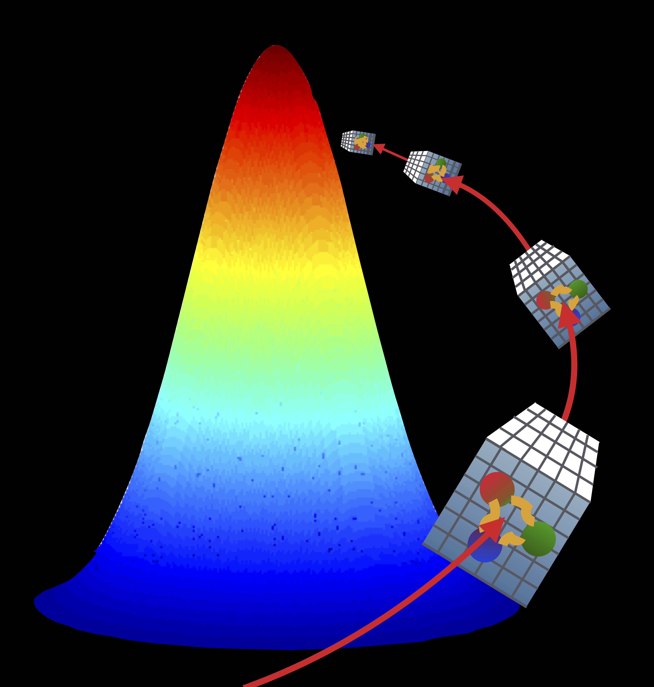

|
Gravitational Form Factors Illuminate Substructure of the Proton
Berkeley Lab Highlight
Using simulations performed on NERSCs Perlmutter system, a team of researchers from Fermi National Laboratory; the Massachusetts Institute of Technology; the University of California, Berkeley; and the Nuclear Science Division at Lawrence Berkeley National Laboratory used LQCD to understand for the first time certain aspects of proton structure in terms of its fundamental quark and gluon constituents. |

|
Inside the box - look at excited hadrons could help solve mystery of particle X3872
Jefferson Lab Highlight
Lattice QCD method suggests a simpler spectrum of exotic XYZ hadrons |

|
Pooling skills to study a slippery particle
Jefferson Lab Highlight
A combination of supercomputing and traditional techniques allowed Jefferson Lab theorists to better describe the unstable sigma meson particle, contributing to our comprehension of the strong interaction |

|
Calculation Sharpens Imaging of Protons Insides
DOE SC Highlight
Nuclear scientists used a new theoretical approach to calculate a value essential for unraveling the three-dimensional motion of quarks within a proton. |

|
Calculation Shows Why Heavy Quarks Get Caught Up in the Flow
DOE SC Highlight
The calculation will help scientists explain experimental results showing heavy quarks getting caught up in the flow of matter generated in heavy ion collisions. |

|
To Understand a Special Hadron, Researchers Turn to Supercomputers and Quantum Chromodynamics
DOE SC Highlight
Scientists Gain new insights into the nature of the puzzling lambda 1405 hyperon resonance and its controversial partner. |

|
Theory Offers a High-Resolution View of Quarks Inside Protons
DOE SC Highlight
Protons contain two up quarks and one down quark. New calculations predicting the spatial distributions of the charges, momentum, and other properties of the quarks within protons revealed key differences between the up and down quarks. |

|
Scientists calculate predictions for EIC measurements
Brookhaven National Lab Highlight
Nuclear theorists used supercomputer calculations to accurately predict the distribution of electric charges in mesons, particles made of a quark and an antiquark. |

|
Drilling into Neutron Stars with Computers
APS Viewpoint
Simulations of neutron stars provide new bounds on their properties, such as their internal pressure and their maximum mass. |

|
Theory and experiment combine to shine a new light on proton spin
Jefferson Lab Highlight
Nuclear physicists have long been working to reveal how the proton gets its spin. Now, a new method that combines experimental data with state-of-the-art calculations has revealed a more detailed picture of spin contributions from the very glue that holds protons together. It also paves the way toward imaging the protons 3D structure. |
Nuclear Physics Gets a Boost for High-Performance Computing
HPC Wire - 2022
Efforts to harness the power of supercomputers to better understand the hidden worlds inside the nucleus of the atom recently received a big boost. |
|

|
How US supercomputers will next model elementary particles
The Register - 2022
If todays tech gets you down, remember supercomputers are still being used for scientific progress |
Nuclear Physics Gets a Boost for High-Performance Computing
Jefferson Lab Highlight - 2022
Jefferson Lab and its partners benefit from Scientific Discovery through Advanced Computing Partnership in Nuclear Physics grants |
|

|
For the First Time, Scientists Rigorously Calculate Three-Particle Scattering from Theory
DOE Office of Science Highlight - 2022
The goal of nuclear physics is to describe all matter from its simplest building blocks: quarks and gluons. Found deep inside protons and neutrons, quarks and gluons also combine in less common configurations to make other subatomic particles of matter. For scientists, producing these less-common particles in experiments is an interesting challenge. A new theory method aids in those efforts by predicting which less-common particles an experiment will produce. |
NERSC's Cori System Reveals Integral Role of Gluons in Proton Pressure Distribution
NERSC Highlight, 2019-07-08
|
|
MG Proto: Multigrid LQCD Propagators for Multicore x86 systems
SciDAC Highlight, 2019-05-16
|
|
Summit speeds calculations in the search for exotic particles
OLCF Highlight, 2018-09-17
|
|
|  |
Accelerating QCD Gauge Generation on GPUs
SciDAC Highlight, 2018-05-01
|